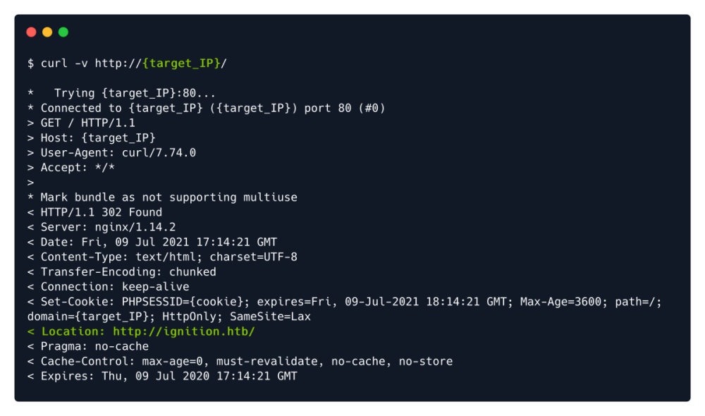
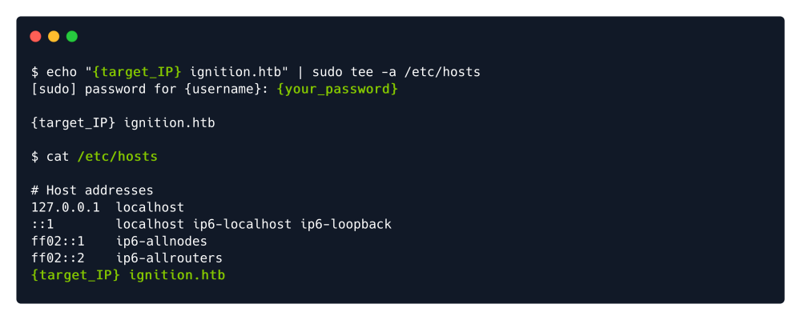

curl & dns
DNS Isolation (Igintion@HTB) can be temporarily solved by adding IP & Virutal Host Name in our local hosts file.
┌──(root💀matrix)-[~]
└─# cat /etc/hosts
127.0.0.1 localhost
127.0.1.1 matrix.matrix.securex.net matrix
10.129.88.45 ignition.htb
curl -v http://{Target_IP}
tee is used to edit here...
